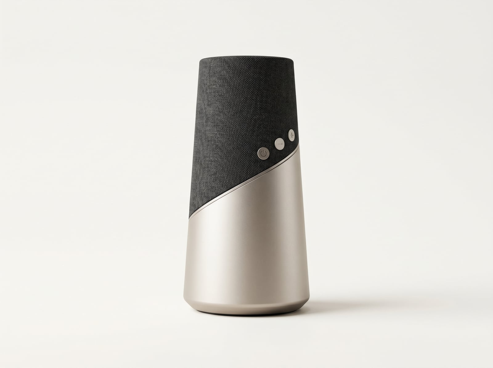
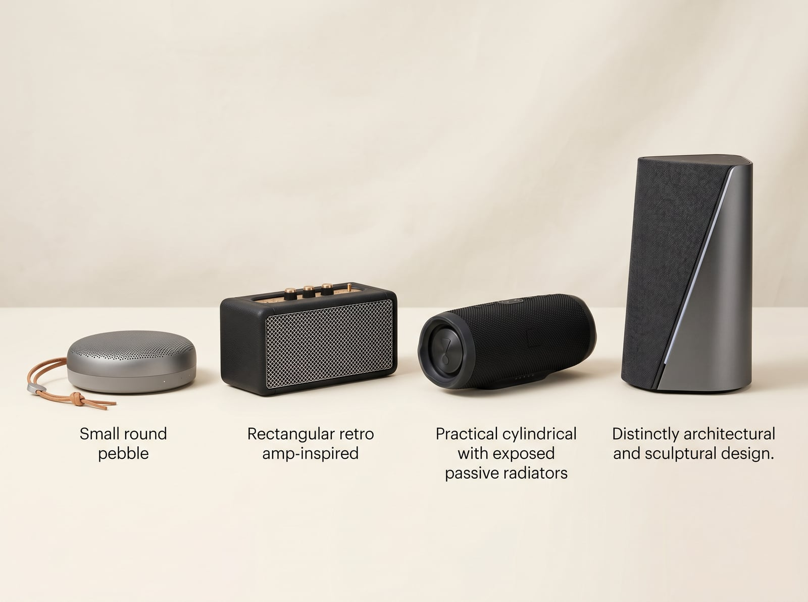
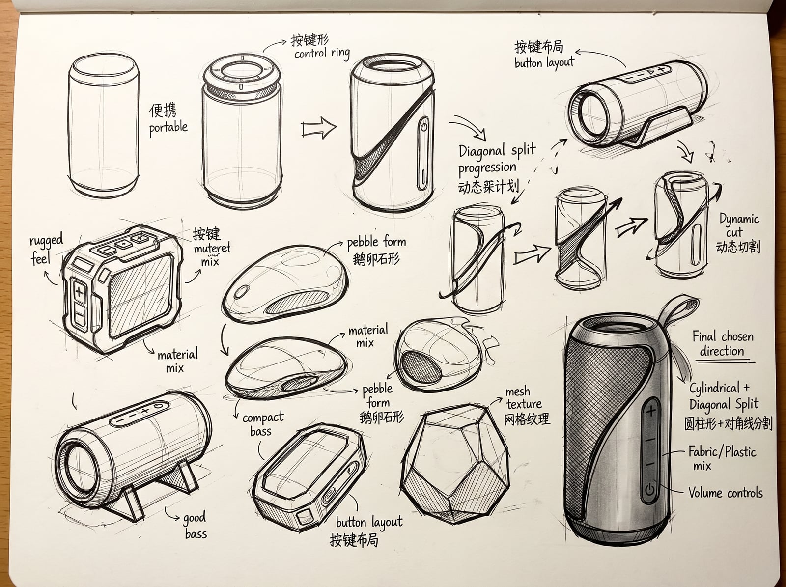
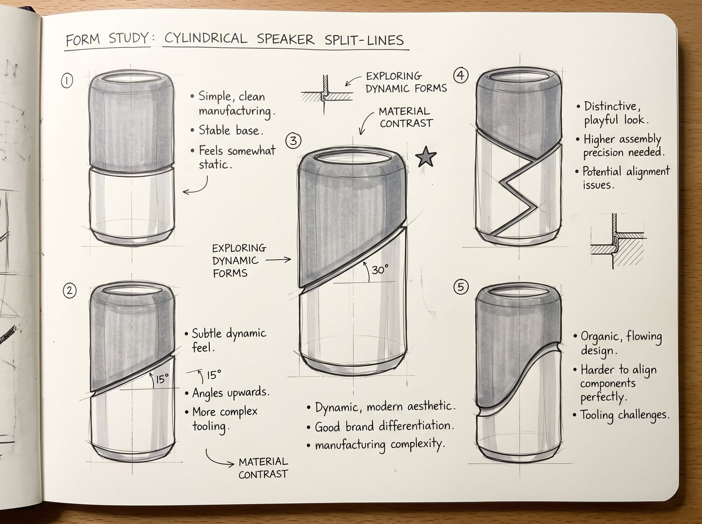
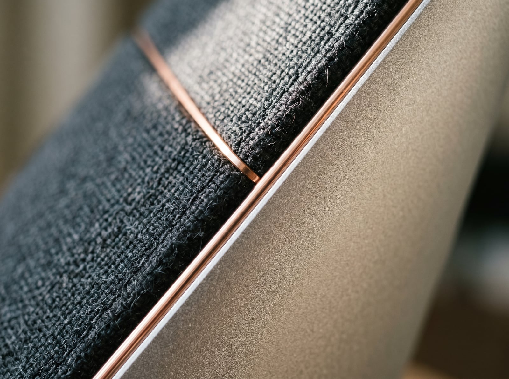

Rift
便携蓝牙音箱
一条斜切分割线，两种材质的对话——Kvadrat 声学织物与阳极氧化铝之间，是声音的张力与平静。

设计背景与机会
便携蓝牙音箱市场被两种极端主导：户外"砖头"和家居"圆球"。前者忽视美学，后者妥协声学。 Rift 定位于两者之间——既能融入精心布置的家居空间，又具备足够的声学性能让聆听成为仪式。
🎯 目标用户
25-35 岁城市创意工作者，重视家居美学，愿意为设计感付费。在家里听音乐是一种仪式而非背景噪音。
💡 设计机会
现有产品要么"隐于环境"（黑色圆柱体），要么"过于张扬"（RGB灯效）。缺少一件静止时也值得被观看的音频产品。
🔧 设计约束
Ø80-100mm 直径 · 180-220mm 高度 · <800g · 蓝牙 5.3 · IPX4 防水 · 10h+ 续航 · 零售价 ¥499-699
竞品对比 · Rift 在哪
现有便携音箱在"家居美学"与"声学性能"之间留下了明显的空白地带。Rift 定位于左上角——既是声音工具，也是空间中的一件雕塑。

美学先行
精致但声学妥协，
圆形形态限制单元尺寸
复古识别
强品牌辨识度，
但风格局限于摇滚美学
功能优先
声学好但视觉平淡，
不适合家居陈列
家居雕塑 × 声学
斜切分割设计语言，
织物+金属材质对话
竞品要么"好看但不够好听"，要么"好听但不够好看"。Rift 的设计命题不是做一个折中方案——而是让美学成为声学体验的一部分。
概念草图 · 从发散到聚焦
在设计的最初两周，核心问题是：一个圆柱体之外，便携音箱还能是什么形态？ 以下草图记录了从广泛发散到逐步聚焦于"斜切分割"方向的全过程。


一个好的设计概念应该能用一句话描述——"斜切分割的圆柱体"就是这句话。它既定义了一个形式，也暗示了一个态度：不妥协。
颜色 · 材料 · 表面处理
三种配色方案，覆盖不同家居风格。每种配色保持相同的材料组合逻辑：上部 Kvadrat 声学织物 + 下部喷砂阳极氧化铝 + 硅胶底座环。

暖沙色
Warm Sand
织物 #D4C9B8 · 铝 #C8BFAE
深空灰
Space Grey
织物 #2E2B26 · 铝 #3A3530
苔藓绿
Moss Green
织物 #5C7D6A · 铝 #7A9684
Kvadrat 声学织物
丹麦 Kvadrat 定制声学织物，0.8mm 厚度，透声率 94%。表面微纹理提供细腻触感，同时有效隐藏内部扬声器单元。阻燃等级 B1，耐磨性 50,000+ Martindale。
喷砂阳极氧化铝
6063 铝合金，120# 玻璃珠喷砂处理。表面粗糙度 Ra 1.2μm——足够细腻以抵抗指纹，足够粗糙以提供温暖的金属触感。阳极氧化膜厚 12μm，盐雾测试 400h+。
最终方案 · 技术规格
经过 12 周迭代，从概念草图到 CMF 定义，Rift 最终方案如下：
| 产品名称 | Rift 便携蓝牙音箱 |
| 尺寸 | Ø88mm × 210mm |
| 重量 | 680g |
| 声学架构 | Ø66mm 全频单元 + 双被动辐射器 |
| 频率响应 | 55Hz – 20kHz |
| 蓝牙版本 | 5.3 · SBC / AAC / LDAC |
| 防水等级 | IPX4（防溅水） |
| 电池续航 | 12 小时（50% 音量） |
| 充电接口 | USB-C · 支持快充 |
| 核心材料 | Kvadrat 声学织物 · 6063 铝合金 · 硅胶 |
| 配色方案 | 暖沙色 / 深空灰 / 苔藓绿 |
结构分解 · 爆炸视图
7 层组件精密堆叠，每层之间有明确的装配关系。设计考虑了可制造性和可维修性——爆炸视图不是展示技巧，是逼自己把每一层堆叠关系和装配顺序想清楚。
7 层组件堆叠示意 · 顶盖 → PCB → 织物套 → 扬声器单元 → 电池组 → 铝腔体 → 硅胶底座环
设计反思
这个项目的关键转折点，是在第 5 周放弃"做一只好看音箱"的模糊目标，转而聚焦一个具体的设计语言——斜切分割。一个好的设计概念，应该能用一句话描述，而这句话本身就应该是一个好的设计。
学到了什么
- · 形式特征必须服务于功能——斜切线之所以成立，是因为它同时解决了朝向提示和材料分界
- · CMF 不是后期的"上色"——材料选择从第 1 周就进入讨论，因为它决定了产品的重量、触感和声学表现
- · 可制造性思考要前置——爆炸视图不是展示技巧，是逼自己把每一层堆叠关系和装配顺序想清楚
下次会怎样改进
- · 更早引入声学工程约束——前 4 周过于侧重形态探索，与声学性能的交叉验证偏晚
- · 增加用户测试环节——目前方案停留在渲染阶段，缺乏真实比例模型的手感验证
- · 探索更多材料组合——陶瓷面板、木纤维腔体等方向值得在下一代中尝试